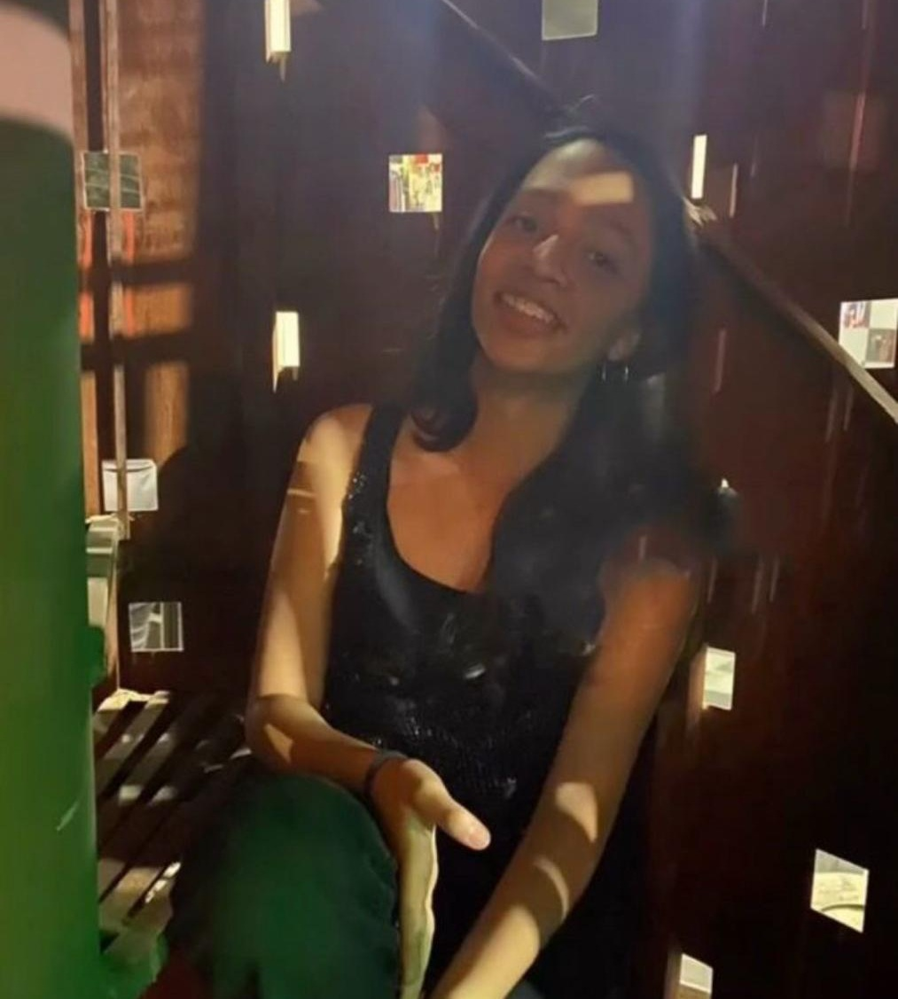
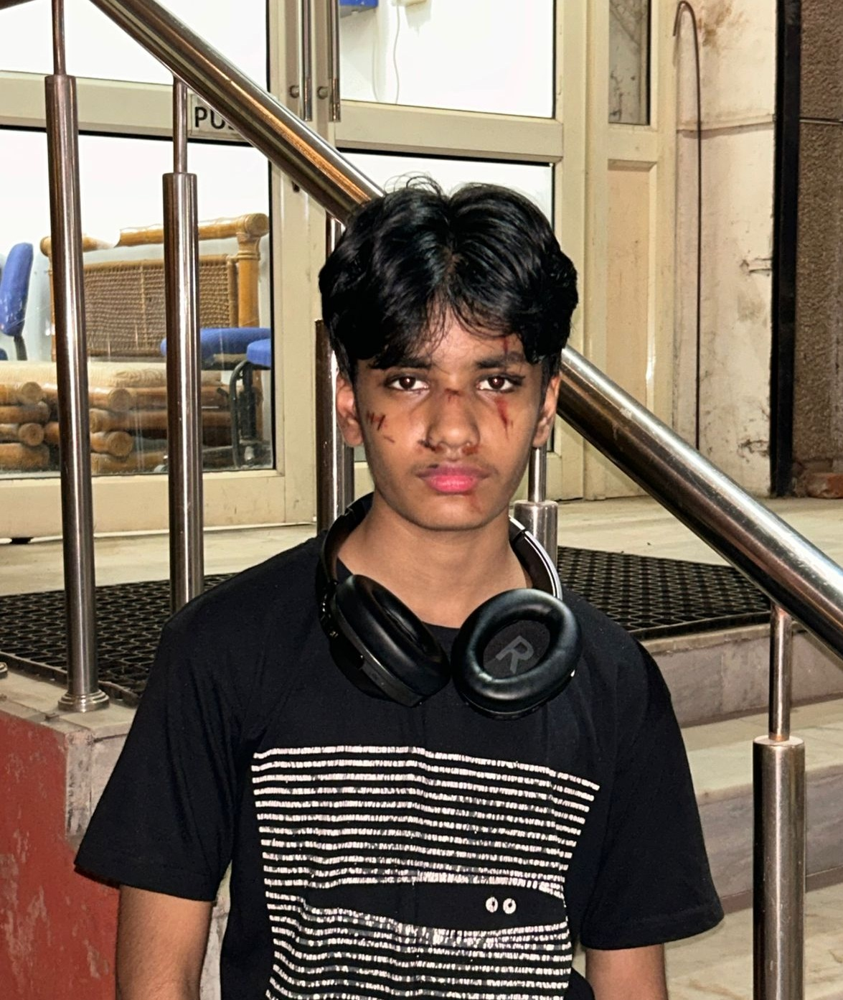

About Us
Shatter the Silence is a student-led program dedicated to raising awareness
about sexual violence and making a stand against it. Our mission is to spread
awareness, support survivors, and drive meaningful change within our
communities. Sexual violence is a pervasive issue that affects individuals
regardless of age, background, or identity, and it’s time we confront it
head-on. Through education, advocacy, and open dialogue, we aim to challenge
harmful societal norms, break the stigma surrounding sexual violence, and
create safe spaces for survivors to share their stories without fear or
judgment.
Every story shared, every fact learned, and every voice raised has the power
to make a difference. We believe that awareness is the first step toward
prevention and that informed communities are empowered communities. By
standing together, we can amplify the voices of survivors, demand
accountability, and foster a culture of respect and consent.
Your voice matters. Every voice counts. We need your support to create lasting
change, not just for today but for future generations. Join us in our mission
to shatter the silence, challenge injustice, and advocate for a world where
everyone feels safe, heard, and valued. Together, we can make a real impact.
Our Aim
Our campaign against sexual violence aims to create a lasting impact by
spreading awareness, educating communities, and fostering meaningful change.
Sexual violence is a widespread issue that affects people of all ages,
genders, and backgrounds. To combat this, we focus on addressing critical
issues such as harassment, peer pressure, good touch/bad touch, consent,
stalking, dating violence, cyber security, and the importance of community
involvement. By tackling these topics, we aim to equip individuals with the
knowledge and tools they need to recognize, prevent, and respond to situations
related to sexual violence.
Education is the foundation of our campaign. We believe that open conversations and proper
guidance can break down the stigma surrounding sexual violence, encouraging more people to
speak up and seek help. Through workshops, awareness drives, and interactive sessions, we
strive to create safe spaces where individuals feel heard, supported, and empowered to take
action.
Collaboration is key to our mission. By working alongside NGOs, educational institutions,
and community organizations, we can amplify our efforts and reach a wider audience.
These partnerships help us share resources, implement prevention programs, and advocate
for policies that prioritize the safety and well-being of individuals.
Our vision extends beyond local communities. We believe that change starts at the
grassroots level, but it doesn’t end there. By building strong foundations locally,
we aim to expand our efforts nationally and, eventually, make a global difference.
Our goal is to create a world where conversations about consent, respect, and safety
are normalized, and where survivors are supported without judgment or fear.
Together, through awareness, education, and collective action, we can challenge harmful
norms, promote prevention, and build a safer, more just world for everyone.
Meet The Management

Evanya Sethi
Founder
Strong, ambitious and a well driven individual who loves her way into peoples lives.

Nivedita Gupta
Co-Founder
A driven individual who always tackles challenges with unwavering determination.

Aman Dutta
President
A curious soul navigating through life.
Ayana Dhall
Vice-President
Dancing = Life
Our Teams
Creative Catalyst Team:
Responsible for bringing innovative ideas to life, this team includes graphic designers and content creators who develop cohesive, inspiring campaigns that stand out in a crowded marketplace.
Digital Dynamo Team:
This tech-savvy group manages social media, email marketing, and digital ads to amplify the campaign’s reach across online platforms.
Project Management Team:
Led by Nivedita Gupta and Evanya Sethi, this team oversees timelines, budgets, and coordination to keep the campaign on track and ensure smooth collaboration.
Communication Connect Team:
Focused on clear, consistent messaging, this team crafts engaging content for internal and external stakeholders, strengthening brand reputation and campaign cohesion.
Outreach Engagement Team:
Dedicated to building connections with target audiences, NGOs, and institutes, this team fosters relationships that enhance the campaign’s visibility and community impact.
Content Creators:
Writers, editors, and strategists produce high-quality content like blogs, articles, social media posts, and more with that aligns with campaign goals and resonates with the audience.